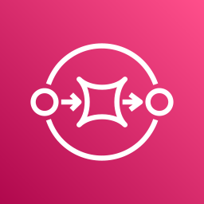

CS7980 · Indigenomics Portal · RAP subsystem
Extraction Observability — is anything broken, and where did the time go?
The ca-stage monitoring plane: workers emit traces, failures, and metrics; CloudWatch turns them into six alarms and a one-pane dashboard; a breach emails on-call over SNS.
ca-central-1 · extraction observability (ca stage only)
RapExtract
worker · Active tracing
BriefGen
briefing worker
Schedule
rate(15 min)
RapData
job records
X-Ray
per-call breakdown

ExtractDLQ
on-failure · 14 days
StuckJobMonitor
scan stuck / failed
Amazon CloudWatch
Metrics
Lambda · SQS · EMF
6 Alarms
≥1 → notify
ExtractionHealth
5-widget pane
SNS
ObservabilityAlerts
Email
on-call inbox
1
2
3
4
5
6
7
8
trace
on-failure
listByStatus
EMF custom
alarm + OK
Design noteWhy a custom scan? The worker catches its own errors and returns {status: failed}, so the Lambda succeeds — the built-in Errors alarm and the DLQ never fire. StuckJobMonitor scans the FAILED + EXTRACTING partitions every 15 min and emits two EMF metrics that catch a handled failure — the shape a Textract-SCP outage takes.
telemetry / metric emission
X-Ray trace
async on-failure → DLQ
alarm → SNS → email
CloudWatch internal read